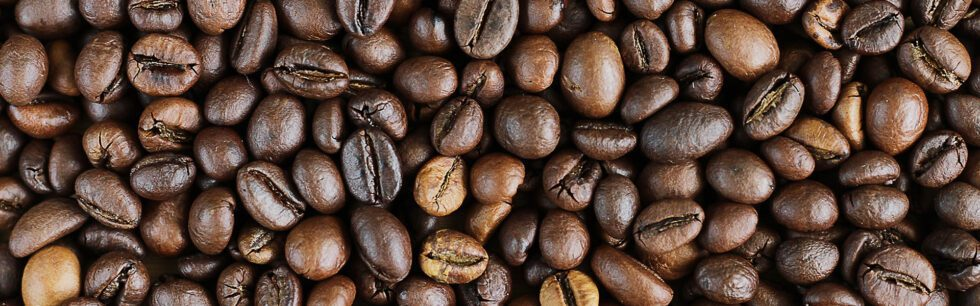
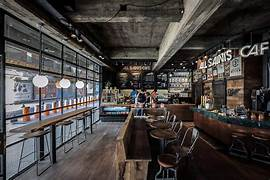

La Ruta del cafe por la Ciudad de Buenos Aires
/*LALALA*/

"Descubre las 3 Mejores Cafeterías de Especialidad en Buenos Aires: El Arte del Café en la Ciudad"
Buenos Aires, famosa por su vibrante cultura, ha adoptado con fuerza la tendencia de las cafeterías de especialidad. Cada vez más personas buscan una experiencia única, donde el café sea tratado con la dedicación y el conocimiento de un arte. Si eres un amante del café y quieres disfrutar de una taza elaborada a la perfección, aquí te presentamos las tres mejores cafeterías de especialidad en Buenos Aires que no puedes dejar de visitar.
-
LAB tostadores de Café
.jpg)
Ubicación: Humboldt 1542, Palermo
LAB es una de las referencias más important---es del café de especialidad en Buenos Aires. Se destaca por su proceso artesanal de tostado y por la dedicación de sus baristas a la hora de preparar cada taza. Utilizan granos de origen único, seleccionados de fincas de distintas partes del mundo, y ofrecen diferentes métodos de extracción como Chemex, V60, Aeropress y espresso.
- Bebida Recomendada: Flat White – Su mezcla perfecta de café y leche es un equilibrio entre suavidad y sabor intenso.
- Ambiente: Minimalista y moderno, perfecto para quienes buscan un espacio tranquilo para disfrutar su café mientras trabajan o leen.
-
Café Cuervo
.jpg)
Ubicación: El Salvador 4580, Palermo
Esta cafetería es conocida por su ambiente acogedor y su compromiso con el café de alta calidad. Café Cuervo selecciona granos de diversas regiones y emplea métodos de extracción precisos para resaltar las notas características de cada variedad. Además de su excelente café, ofrecen una deliciosa selección de pastelería casera.
- Bebida Recomendada: Cold Brew – Famoso por su suavidad y baja acidez, perfecto para los días cálidos en Buenos Aires.
- Ambiente: Acogedor y rústico, con detalles en madera, ideal para relajarse o charlar con amigos.
-
All Saints Café

Ubicación: Ciudad de la Paz 2300, Belgrano
All Saints es un rincón muy especial en el barrio de Belgrano. Aquí los baristas cuidan cada detalle, desde la elección de los granos hasta la temperatura ideal de cada preparación. Su carta abarca desde espresso hasta métodos más elaborados como el pour over. Además, cuentan con opciones veganas y un enfoque en el comercio justo.
- Bebida Recomendada: Cold Brew – Famoso por su suavidad y baja acidez, perfecto para los días cálidos en Buenos Aires.
- Ambiente: Acogedor y rústico, con detalles en madera, ideal para relajarse o charlar con amigos.